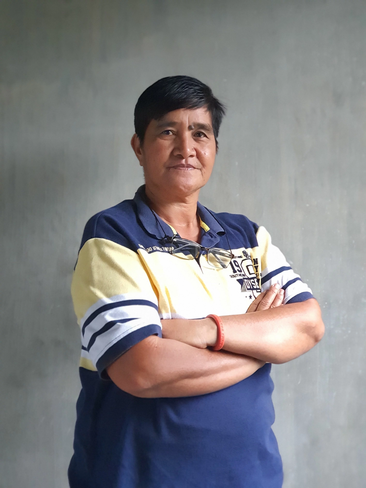

Confident in their abilities and certain of their power, women take on numerous roles in society. Taking up space and achieving great feats have been their primary ways of proving that they are worthy of esteem and are empowered to handle responsibilities, especially in leadership. This holds true to Elena, a peace pact holder in Kalinga, who illuminates her light to lead her land toward a peaceful life.
Designated by elders of the Biga tribe with a unanimous decision, Elena Baglinit holds a peace pact between her indigenous community and the Tanglag tribe in Lubuagan, Kalinga. Succeeding to the peace pact of her father, she came to learn about her functions as a peace pact holder through four community meetings. She believes that being the youngest child in her family was one of the reasons for her being selected.
The 55-year old Bodong holder has her community’s trust as they believe that she is completely able to make good decisions for them. Perceived with high regard even before she accepted the responsibility, Elena committed more of her time and capabilities in helping people resolve their problems when she became their village’s peace representative. With her tribe’s confidence in her, it did not matter that she was a woman.
Fulfilling her duties and responsibilities. Elena’s experience in problem-solving boosted her confidence that she could perform the task of dealing with conflicts since it’s her utmost mission to resolve community issues. As a leader with a functional moral compass, she always sides with the one who is right. Wealth or smartness does not influence her decision-making, because she sets aside biases to fairly support the people who are on the right side of situations.
Elena’s title heightened her sense of responsibility that’s why she strived to be a good role model to her community by being righteous in all her actions and gestures. Having urged her to be an image of good leadership for the folks to emulate, the Bodong she holds also elevated her alertness and sensitivity to the needs of her tribe members.
Being a woman peace pact holder. Being the lone woman Bodong holder in her tribe, Elena believes that she was chosen because she’s a lesbian. As a female leader dealing with similar responsibilities and issues male peace pact holders manage, she has not encountered any problems based on the fact that she is a woman. Her sexual orientation essentially makes people consider that she can make a firm decision like a man.
Despite having the thought of men making firmer decisions than their female counterparts, Elena highlighted women’s superior skills in negotiation, especially concerning youth delinquents. In her viewpoint, they can deal better with the younger generation who are in conflict with what’s deemed right because women are generally more patient. She had observed and noted that children tend to be frightened of men, but that fear vanishes when a woman talks to them with compassion. Their supreme ability to sympathize and lengthen their patience proves that negotiation is one of the women’s strong points.
Becoming a woman peace pact holder. A peace pact holder since 2018, Elena has already spent 3 years dealing with both the successes and challenges of her role. She’s always trying her best to serve her people well. One instance where she exemplified good dispute settlement capability was when somebody from another tribe was stoned by someone from her tribe last year. The victim suffered injuries, but the worsening of the dispute was avoided because Elena dealt with the trouble. The one side had to perform certain rituals on behalf of the victim so that it would appease the other party and the tension might not heat up into something worse.
One difficulty of holding a Bodong is that Elena is required to make herself available whenever and wherever she is needed, no matter what the circumstances are. No matter the time and place, she has to be there when duty calls.
Despite the struggles she encounters and the huge responsibility she carries, Elena remains steadfast in doing her job because she does not want to perpetuate violence. In the 1980s, the Bodong she holds was severed and came to a halt because the conflict between the two tribes led to bloodshed. Elena does not want to have that kind of war and violence, especially among the present generation. Good thing is that the peace pact was restored in 2018. Fuelled to be a protector of peace within and across tribes, she continues to do her work and justify her responsibility as a peace pact holder. For her, peace is tantamount to good life and peace of mind.
Calling future women peace pact holders. Elena emphasizes that if Kalinga women want to become peace pact holders, they should be able to exemplify strength and wisdom in decision-making, be ready in all assets especially financially, be fearless and courageous, and be a very present help for the people.
Truly, Elena is an empowered woman who is worthy of being a peace pact holder. She lives up to the profound meaning of her name as she shares her brightness with her people toward a harmonious and peaceful life. Indeed, Elena is the leading ‘light’ of her land.
31 October 2021